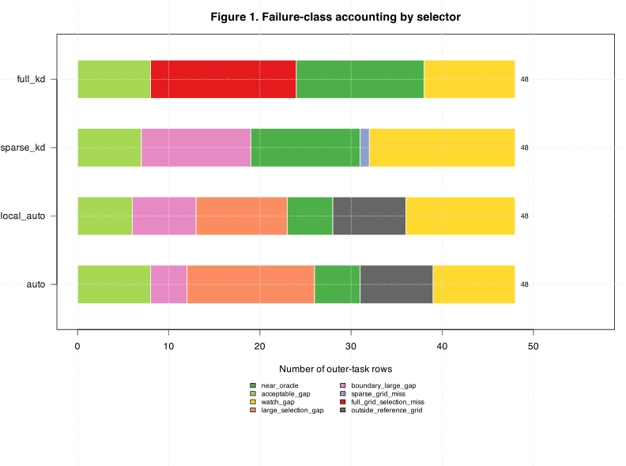
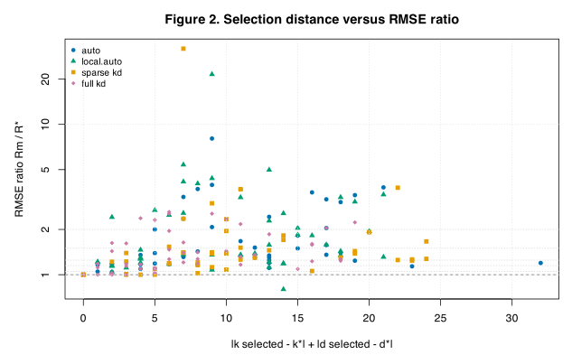
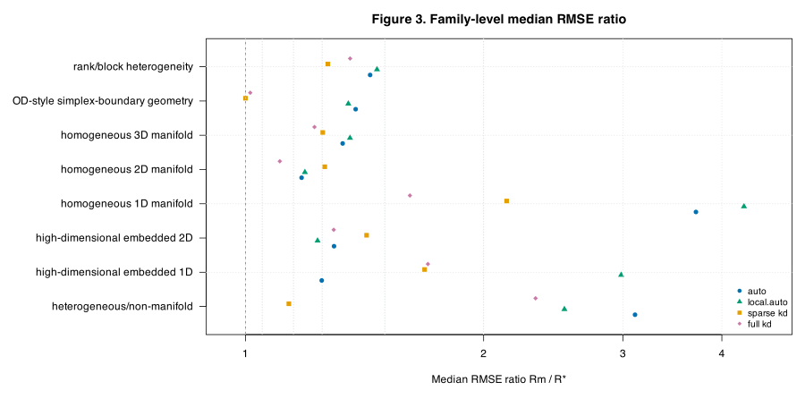
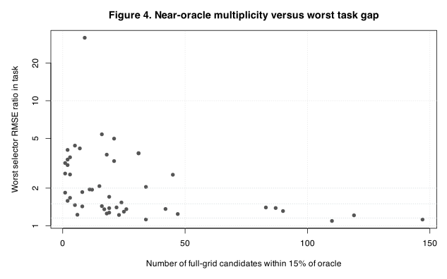
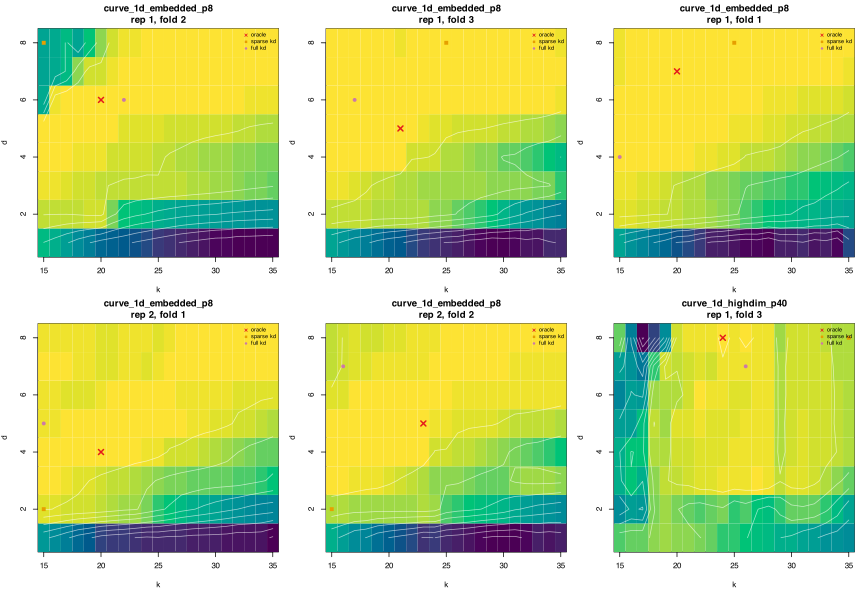

CSD7 Task-Level Failure Diagnostics
Purpose
CSD6 showed that coupled support-size and chart-dimension selection can be fast, but the selected fits can still be far from the truth-facing full-grid oracle. CSD7 asks a narrower diagnostic question: when a selector has high regret, what kind of miss is it?
For each outer task \(s\), let \(R_{s,m}\) be the Truth RMSE of method \(m\), and let
\[ R_s^\star = \min_{k\in\{15,\ldots,35\},\ d\in\{1,\ldots,8\}} R_s(k,d) \]be the best Truth RMSE over the full numeric reference grid. CSD7 reports the ratio
\[ \kappa_{s,m}=\frac{R_{s,m}}{R_s^\star} \]and the relative regret \(100(\kappa_{s,m}-1)\). Values near \(1\) mean the selected fit is close to the full-grid oracle. Large values mean the selected fit is much worse than a candidate that was available in the reference grid.
Failure Classes
Each method-task row is assigned one descriptive class. The thresholds are
diagnostic, not a statistical test: near-oracle means
\(\kappa\le1.15\), acceptable means \(1.15<\kappa\le1.25\), watch means
\(1.25<\kappa\le1.5\), and large gap means \(\kappa>1.5\). A
sparse_grid_miss means sparse_kd is poor while
full_kd is near-oracle on the same task. A
full_grid_selection_miss means even the full numeric grid selector
is poor relative to the truth-facing oracle, which points toward selection/CV
instability rather than only sparse-grid coverage. The
outside_reference_grid class means the selected coordinates could
not be replayed inside the CSD6 numeric reference grid, often because an
automatic dimension rule chose a chart dimension above the reference cap
\(d=8\).
| strategy | acceptable_gap | boundary_large_gap | full_grid_selection_miss | large_selection_gap | near_oracle | outside_reference_grid | sparse_grid_miss | watch_gap |
|---|---|---|---|---|---|---|---|---|
| auto | 8 | 4 | 0 | 14 | 5 | 8 | 0 | 9 |
| full_kd | 8 | 0 | 16 | 0 | 14 | 0 | 0 | 10 |
| local_auto | 6 | 7 | 0 | 10 | 5 | 8 | 0 | 12 |
| sparse_kd | 7 | 12 | 0 | 0 | 12 | 0 | 1 | 16 |

Figure 1. Failure-class accounting by selector. Each horizontal stack contains the 48 outer-task rows for one selector. Green classes are close to the truth-facing full-grid oracle; orange and red classes mark larger gaps. The class names are descriptive labels used to triage where additional selector work should focus.
The most important distinction is between sparse-only misses and full-grid selection misses. If sparse misses dominate, the sparse grid should be refined. If full-grid misses dominate, changing the sparse grid alone will not solve the problem because the larger candidate set is also selecting poorly.
Distance From The Truth-Facing Oracle
The full-grid oracle has coordinates \((k_s^\star,d_s^\star)\). For a selected method with coordinates \((\hat k_{s,m},\hat d_{s,m})\), CSD7 plots the simple coordinate distance
\[ D_{s,m}=|\hat k_{s,m}-k_s^\star|+|\hat d_{s,m}-d_s^\star|. \]This is not a geometry-aware distance between fits; it is only a quick diagnostic for whether poor fits tend to select far-away candidate coordinates. If \(D_{s,m}\) is small and \(\kappa_{s,m}\) is still large, then the truth surface is locally steep or unstable near the oracle. If \(D_{s,m}\) is large, then the selector is moving to a very different part of the grid.

Figure 2. Selected-coordinate distance versus RMSE ratio. The vertical axis is logarithmic because a few tasks have very large ratios. Horizontal guide lines mark \(\kappa=1.05,1.15,1.25,1.5\), and \(2\). Points high above the \(2\) line are severe misses; points far to the right also selected a \((k,d)\) pair far from the truth-facing oracle.
Geometry Families
The CSD6 bundle deliberately mixes homogeneous manifolds, high-dimensional embeddings, non-manifold unions, simplex-boundary geometry, and rank-block heterogeneity. Family-level summaries ask whether high regret is concentrated in only one kind of geometry.
| strategy | dataset.family | median.rmse.ratio | median.relative.regret.percent | median.k.distance | median.d.distance |
|---|---|---|---|---|---|
| auto | heterogeneous/non-manifold | 3.11 | 211 | 12.5 | 4.5 |
| full_kd | heterogeneous/non-manifold | 2.33 | 133 | 3 | 0.5 |
| local_auto | heterogeneous/non-manifold | 2.53 | 153 | 5.5 | 5 |
| sparse_kd | heterogeneous/non-manifold | 1.13 | 13.5 | 5 | 0.5 |
| auto | high-dimensional embedded 1D | 1.25 | 24.9 | 6.5 | 12 |
| full_kd | high-dimensional embedded 1D | 1.7 | 70.1 | 5 | 4 |
| local_auto | high-dimensional embedded 1D | 2.98 | 198 | 5 | 9 |
| sparse_kd | high-dimensional embedded 1D | 1.68 | 68.4 | 10 | 5 |
| auto | high-dimensional embedded 2D | 1.29 | 29.4 | 5.5 | 2 |
| full_kd | high-dimensional embedded 2D | 1.29 | 29.3 | 3.5 | 1.5 |
| local_auto | high-dimensional embedded 2D | 1.23 | 23.4 | 3 | 1.5 |
| sparse_kd | high-dimensional embedded 2D | 1.42 | 42.3 | 7 | 5 |
| auto | homogeneous 1D manifold | 3.71 | 271 | 5 | 3.5 |
| full_kd | homogeneous 1D manifold | 1.61 | 61.4 | 5 | 1 |
| local_auto | homogeneous 1D manifold | 4.27 | 327 | 5 | 3.5 |
| sparse_kd | homogeneous 1D manifold | 2.14 | 114 | 5 | 2.5 |
| auto | homogeneous 2D manifold | 1.18 | 17.8 | 2.5 | 1 |
| full_kd | homogeneous 2D manifold | 1.11 | 10.5 | 1.5 | 0.5 |
| local_auto | homogeneous 2D manifold | 1.19 | 18.9 | 1.5 | 1 |
| sparse_kd | homogeneous 2D manifold | 1.26 | 26 | 4.5 | 2 |
| auto | homogeneous 3D manifold | 1.33 | 32.7 | 6 | 5 |
| full_kd | homogeneous 3D manifold | 1.22 | 22.2 | 6 | 1 |
| local_auto | homogeneous 3D manifold | 1.36 | 35.6 | 7 | 6 |
| sparse_kd | homogeneous 3D manifold | 1.25 | 25.2 | 13.5 | 2 |
| auto | OD-style simplex-boundary geometry | 1.38 | 37.8 | 15.5 | 1 |
| full_kd | OD-style simplex-boundary geometry | 1.01 | 1.42 | 1 | 2.5 |
| local_auto | OD-style simplex-boundary geometry | 1.35 | 34.9 | 13.5 | 1 |
| sparse_kd | OD-style simplex-boundary geometry | 1 | 0.0321 | 0 | 4 |
| auto | rank/block heterogeneity | 1.44 | 43.7 | 9.5 | 3 |
| full_kd | rank/block heterogeneity | 1.36 | 35.6 | 8 | 0.5 |
| local_auto | rank/block heterogeneity | 1.47 | 46.6 | 10 | 3 |
| sparse_kd | rank/block heterogeneity | 1.27 | 27.1 | 9 | 0 |

Figure 3. Median RMSE ratio by geometry family and selector. Each point is the family-level median \(\kappa=R_m/R^\star\). The dashed vertical line is the oracle value \(\kappa=1\); dotted guide lines mark \(1.05\), \(1.15\), \(1.25\), \(1.5\), and \(2\). Families with points far to the right are the cases driving the largest practical concern.
Near-Oracle Multiplicity
A task may be easy to select if many full-grid candidates are close to the truth-facing oracle. CSD7 counts how many candidates satisfy \(R_s(k,d)\le1.15R_s^\star\). A small count means the good region of the truth surface is narrow; a large count means there are many almost-equivalent choices.

Figure 4. Number of near-oracle full-grid candidates versus the worst selector ratio in the same task. If severe misses occur when the near-oracle count is small, then the selection problem is sharply localized. If severe misses occur even when the count is large, then the issue is less about a narrow optimum and more about selection bias or score mismatch.
Large-Gap Truth Surfaces
The next figure shows representative large-gap tasks. The heatmap is the
truth-facing full-grid surface \(R_s(k,d)\); darker colors are lower Truth RMSE.
The red cross is the full-grid oracle, the orange square is the
sparse_kd selected candidate, and the pink dot is the
full_kd selected candidate.

Figure 5. Representative large-gap truth-facing score surfaces. These panels separate two different problems: whether the sparse grid even looks in the right region, and whether the full numeric grid selector chooses a candidate near the truth-facing oracle. The figure does not show inner-CV surfaces; it shows only the saved CSD6 truth reference surface.
The table below lists the largest individual gaps. It is intentionally short; the full row-level diagnostics are linked in the reproducibility section.
| dataset | family | rep | fold | strategy | R_m | R_star | R_ratio | Delta_rel_pct | k_sel | d_sel | k_star | d_star | near_1.15_count | near_1.25_count | class |
|---|---|---|---|---|---|---|---|---|---|---|---|---|---|---|---|
| curve_1d_embedded_p8 | homogeneous 1D manifold | 1 | 2 | sparse_kd | 0.377 | 0.0118 | 31.9 | 3090 | 15 | 8 | 20 | 6 | 9 | 13 | boundary_large_gap |
| curve_1d_embedded_p8 | homogeneous 1D manifold | 1 | 2 | local_auto | 0.255 | 0.0118 | 21.5 | 2051 | 15 | 2 | 20 | 6 | 9 | 13 | boundary_large_gap |
| curve_1d_embedded_p8 | homogeneous 1D manifold | 1 | 2 | auto | 0.0953 | 0.0118 | 8.05 | 705 | 15 | 2 | 20 | 6 | 9 | 13 | boundary_large_gap |
| curve_1d_embedded_p8 | homogeneous 1D manifold | 1 | 3 | local_auto | 0.0873 | 0.0162 | 5.39 | 439 | 17 | 2 | 21 | 5 | 16 | 46 | large_selection_gap |
| curve_1d_highdim_p40 | high-dimensional embedded 1D | 1 | 3 | local_auto | 1.4 | 0.28 | 4.98 | 398 | 28 | 17 | 24 | 8 | 21 | 44 | outside_reference_grid |
| curve_1d_embedded_p8 | homogeneous 1D manifold | 1 | 1 | local_auto | 0.0419 | 0.00958 | 4.38 | 338 | 16 | 2 | 20 | 7 | 5 | 14 | large_selection_gap |
| curve_1d_embedded_p8 | homogeneous 1D manifold | 2 | 1 | local_auto | 0.0805 | 0.0194 | 4.16 | 316 | 15 | 2 | 20 | 4 | 7 | 18 | boundary_large_gap |
| curve_1d_highdim_p40 | high-dimensional embedded 1D | 2 | 3 | local_auto | 1.09 | 0.269 | 4.04 | 304 | 19 | 13 | 18 | 6 | 2 | 2 | outside_reference_grid |
| curve_1d_embedded_p8 | homogeneous 1D manifold | 1 | 1 | auto | 0.0379 | 0.00958 | 3.96 | 296 | 16 | 2 | 20 | 7 | 5 | 14 | large_selection_gap |
| curve_1d_highdim_p40 | high-dimensional embedded 1D | 1 | 2 | auto | 0.782 | 0.205 | 3.81 | 281 | 25 | 16 | 34 | 4 | 31 | 44 | outside_reference_grid |
| curve_1d_highdim_p40 | high-dimensional embedded 1D | 1 | 1 | sparse_kd | 0.551 | 0.145 | 3.79 | 279 | 15 | 2 | 31 | 8 | 31 | 33 | boundary_large_gap |
| curve_1d_embedded_p8 | homogeneous 1D manifold | 1 | 3 | auto | 0.0602 | 0.0162 | 3.72 | 272 | 16 | 2 | 21 | 5 | 16 | 46 | large_selection_gap |
| curve_1d_embedded_p8 | homogeneous 1D manifold | 2 | 2 | auto | 0.0706 | 0.0191 | 3.7 | 270 | 15 | 2 | 23 | 5 | 18 | 25 | boundary_large_gap |
| curve_1d_embedded_p8 | homogeneous 1D manifold | 2 | 2 | sparse_kd | 0.0706 | 0.0191 | 3.7 | 270 | 15 | 2 | 23 | 5 | 18 | 25 | boundary_large_gap |
| surface_line_union_p8 | heterogeneous/non-manifold | 2 | 1 | auto | 0.294 | 0.0832 | 3.53 | 253 | 29 | 3 | 15 | 5 | 3 | 4 | large_selection_gap |
| curve_1d_highdim_p40 | high-dimensional embedded 1D | 1 | 2 | local_auto | 0.7 | 0.205 | 3.41 | 241 | 25 | 16 | 34 | 4 | 31 | 44 | outside_reference_grid |
What We Learned
CSD7 changes the next-step question. The problem is not only sparse-grid coverage. Some high-regret rows are sparse-grid misses, but full-grid selection misses also occur. That means a larger sparse grid alone is unlikely to close the gap. The next useful CSD step should persist candidate-level inner-CV scores and compare them directly with the truth-facing grid. That would let us distinguish a genuinely noisy CV surface from a deterministic rule that is systematically biased toward the wrong part of the grid.
Until that candidate-level CV surface exists, the safest interpretation is that coupled \((k,d)\) selection is promising but not ready to be treated as a settled default. It needs a CV-surface audit and probably a robust selection rule, such as near-tie handling, one-standard-error-style biasing, repeated CV, or a staged rule that avoids boundary and narrow-optimum failures.
Reproducibility
CSD7 was generated from cached CSD6 artifacts and did not rerun any model fits.
- Render command:
Rscript dev/methods/lps/ci/csd7_task_failure_diagnostics_render.R --input-dir=/Users/pgajer/current_projects/geosmooth/dev/methods/lps/reports/csd6_expanded_relative_regret_20260708 - Input strategy scores: CSD6 strategy outer scores
- Input full-grid candidate scores: CSD6 full-grid candidate scores
- Row-level diagnostics: csd7_row_level_failure_diagnostics.csv
- Failure-class summary: csd7_failure_class_summary.csv
- Family summary: csd7_family_failure_summary.csv
- Task summary: csd7_task_level_summary.csv
- Metadata: csd7_result_metadata.csv